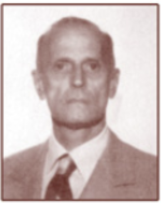

Lambda Theta Phi was founded by 14 Latino students at Kean College as a vehicle by which they would foster Latino unity and address inequities in the way Latinos were being treated on campus. The fraternity’s founding fathers received guidance and assistance from a faculty member, Cayetano Socarras, and a administrator, Jose Quiles who would become the organizations “fraternal fathers.”
Lambda Theta Phi, Latin Fraternity Inc. Founded December 1, 1975
